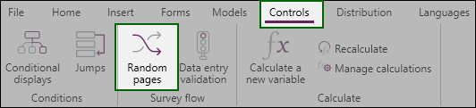
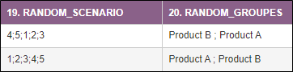

RANDOMLY PRESENT PAGES
Random page rotation allows you to design a questionnaire in which blocks of pages appear in a random order for each new respondent. This minimizes the bias induced by a given order, and improves data quality in specific cases.
To set up a random page rotation, do the following:
-
Go to the Controls tab.
-
Click on Random Pages from the Survey flow group.

-
Fll in the syntax to be used in the field provided for this purpose:

Syntax definition:
-
« - »: It allows to define a set of pages without having to enumerate all the pages.
Example: « 2 – 6 » equates to «2 ; 3 ; 4 ; 5 ; 6 ».
-
« (...) »: The parentheses are used to define a group of pages that will be randomly displayed.
Example: « (2 – 6) » means that pages from 2 to 6 will be displayed in random order.
-
« % »: the percentage is used to set a fixed number of page to be displayed from a random page group.
Example: « (2 – 6) %3 » means that 3 pages will be randomly displayed from the 5 pages defined in the random group. Thus, it will be possible to get the pages "4; 6; 2 "or" 2; 5; 3 " for example.
-
« * »: The star is used to force the display of a page from a random page group.
Example: « (2 ; 3 ; 4* ; 5 ; 6) » means that the page 4 will always appear in the random Page-flows of this group.
-
« {...} »: The braces are used to define page subgroups that will be displayed randomly.
Example: « ({2 ; 3} ; {4 ; 5} ; {7 ; 8}) » means that the page subgroups appear in random order. We can obtain the pages « 2;3 ; 7;8 ; 4;5 » or « 4;5 ; 2;3 ; 7;8 », among others.
EXAMPLE: A complex syntax of a 15-page form : 1 ; (2 ; 3 ; 4* ; 5)%3 ; 6 - 8 ; ({9;10} ; {11;12} ; {13;14}) ; 15
Scenario:
-
The form always starts with page 1.
-
Then we randomly display 3 pages among the pages (2, 3, 4, and 5) knowing that on page 4 will always appear in 3rd position in this page group.
-
Pages 6, 7 and 8 are always displayed in that order.
-
Then a random display of three sub-pages.
-
Page 15 always appears last to close the questionnaire.
Two variables are automatically created when a random page rotation is set up (these variables will be displayed when the survey is published online).

-
Variable RANDOM_SCENARIO
This variable is used to display the flow of random pages for each observation.
-
Variable RANDOM_GROUPES
This variable is used to easily display and identify the display order of the defined page blocks.